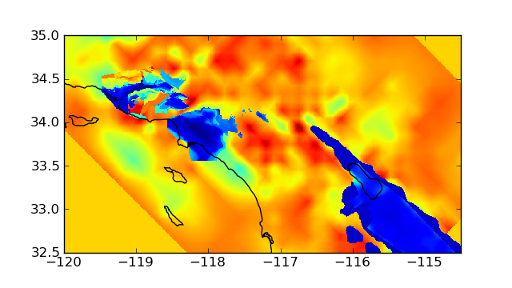
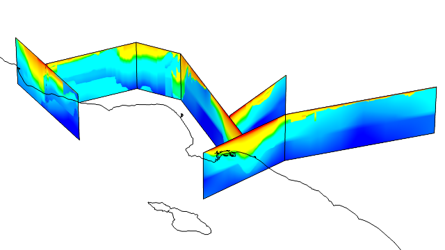

SCEC CVM4
SCEC Community Velocity Model for Southern California by Harold Magistrale with bug fixes, parallel binary I/O, and Python wrapper by Geoffrey Ely.
Usage
The basic steps to running the CVM using the Python wrapper are:
- Import the cvm module.
- Call the cvm.stage() routine giving the number of mesh points and the number of processing cores
- Write longitude, latitude, and depth files into the staged directory.
- Launch either an interactive job using the run.sh script or a batch job using the queue.sh script.
Examples
Depth slice
Extract S-wave velocity at 500 m depth. Plot using Matplotlib:
cd scripts/cvm-example python mesh.py
Source code: mesh.py
#!/usr/bin/env python import os, cvm import numpy as np import matplotlib.pyplot as plt # parameters lon, lat = (-120.0, -114.5), (32.5, 35.0) delta = 0.5 / 60.0 # create mesh x = np.arange( lon[0], lon[1] + delta/2, delta ) y = np.arange( lat[0], lat[1] + delta/2, delta ) x, y = np.meshgrid( x, y ) z = 500.0 * np.ones_like( x ) # CVM setup job = cvm.stage( nsample=x.size ) path = job.rundir + os.sep # write CVM input files np.array( x, 'f' ).tofile( path + 'lon' ) np.array( y, 'f' ).tofile( path + 'lat' ) np.array( z, 'f' ).tofile( path + 'dep' ) # run CVM job and read Vs cvm.launch( job ) v = np.fromfile( path + 'vs', 'f' ).reshape( x.shape ) # plot fig = plt.figure( figsize=(6.4, 3.6) ) ax = plt.gca() im = ax.imshow( v, extent=lon+lat, origin='lower', interpolation='nearest' ) x, y = cvm.data.mapdata( 'coastlines', 'high', (lon, lat), 100.0 ) ax.plot( x-360.0, y, 'k-' ) ax.set_aspect( 1.0 / np.cos( 33.75 / 180.0 * np.pi ) ) ax.axis( lon+lat ) f = path + 'cvm4-vs500.png' print f fig.savefig( f )
Fence diagram
Build a fence diagram similar to Magistrale (2000) figure 10. Plot using Mayavi:
cd scripts/fence python mesh.py python plot.py

Documentation
Magistrale, H., et al. (1996) A geology-based 3D velocity model of the Los Angeles basin sediments, BSSA 86(4):1161–1166
Magistrale, H., et al. (2000), The SCEC southern California reference three-dimensional seismic velocity model version 2, BSSA, 90(6B):S65–76, doi: 10.1785/0120000510. [PDF]